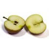
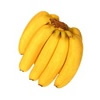

Health
Special blends
- Green Giant: super, vegetable, cancer-beating combo with iron and magnesium aplenty
- Very Berry Sparkler: Summer fruit blend for those hammock days relaxing by the pool or on the beach
- Beet Route: A liquid beauty treatment in a glass
- Citrus Classic: All the old-friends: orange, lemon, lime, grapefruit in one juice with the added bonus of exotic kumquat
- Sparkling Sunshine: A blend of grape and pomegranate juices. This one is really made to get you out of bed on the those cold winter mornings.
- Tang: A blend tropical fruits. This one is really made to get singing along with those old calypso recordings. This is one of our best sellers. You keep coming back for more.
Yum juices are made with all guaranteed organic fruit and vegetables sourced from bona-fide organic suppliers. Yum juices promote healthy bodies and healthy minds Try our special blends: Beat Route for sparking eyes and teeth Tang for kidney and liver function. Green Goddess to beat off colds and flus.
Happiness
A healthy diet is a key ingredient in a happy life. Yum juices promote physical and mental well-being through healthy eating. Beat the blues the natural way. Eat positive; think positive. Let the sun come shining through with your morning dose of Sparkling Sunshine. It's your body and your mind. Treat it with respect.
Fun
Join Yum Juices fun activity weekends. Get together with other juicers and share new juice recipees and learn about new juicing technologies. The first four customers to register each month will win state-of-the-art. Kids can join the Kids4Juice club. Kids4Juice runs special residential juice weekends. Register now. Simply complete our online form.